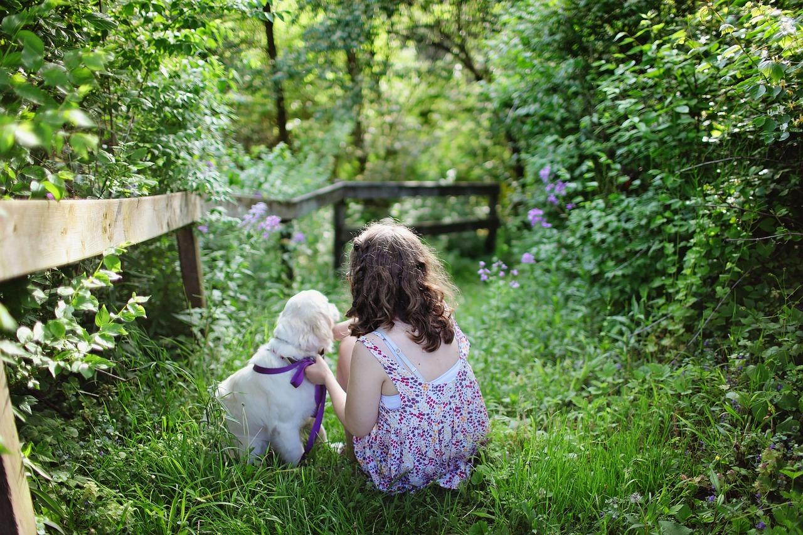

一、性格特点
😊 温顺友善
金毛犬最突出的性格特点就是温顺友善，被誉为"犬界暖男"。它们对人类充满信任，几乎不会表现出攻击性，即使面对陌生人也会摇尾示好。
🧠 聪明伶俐
金毛犬在犬类智商排行榜上位列第四，相当于6-7岁儿童的智力水平。它们学习能力强，能快速掌握各种指令和技能。
💕 忠诚依恋
金毛犬对主人极度忠诚，喜欢时刻陪伴在家人身边。它们不喜欢长时间独处，分离焦虑在该品种中较为常见。
🎈 活泼开朗
金毛犬性格开朗乐观，脸上总是挂着"笑容"。它们的快乐情绪很容易感染周围的人，是天然的"情绪治愈师"。
二、社交行为
与人类的相处
金毛犬天生热爱人类，尤其喜欢与儿童互动。它们耐心十足，能容忍孩子的拉扯和吵闹，被称为"最佳保姆犬"。
与其他动物的相处
大多数金毛犬与其他狗狗能和平相处，特别是在幼犬时期进行良好的社会化训练后。对于猫咪等其他宠物，金毛犬的接受度也较高。
三、运动需求
每日运动时长
60-90 分钟
分早晚两次进行，避免在高温时段剧烈运动
最爱运动
游泳、接球、跑步
金毛是水猎犬后代，天生热爱水上活动
脑力训练
15-20 分钟/天
益智玩具、服从训练、气味游戏等
四、常见行为习惯
- 爱叼东西：源于寻回犬的本能，金毛喜欢用嘴衔住各种物品。主人应提供安全的咬胶和玩具。
- 热情扑人：见到主人或熟人时，金毛常常会兴奋地扑上去表达喜爱。应从小训练其养成"坐好再打招呼"的习惯。
- 食量大、爱吃：金毛是不折不扣的"吃货"，容易发胖。主人需要严格控制饮食量和喂食频率。
- 掉毛严重：金毛拥有双层被毛，每年春秋两季会大量换毛。需要每天梳理。
- 好奇心强：金毛对周围的一切都充满好奇，带出门时要注意牵好牵引绳。
- 情感丰富：金毛能敏锐感知主人的情绪变化，是天然的情感支持犬。
五、不同成长阶段的习性变化
0-6个月
幼犬期
充满好奇心和活力，喜欢啃咬一切东西，是性格形成和训练的黄金期。需要充足的睡眠和温和的运动。
6-18个月
青春期
精力旺盛，偶尔会"叛逆"。需要坚持训练，增加运动消耗，帮助它们平稳度过这个阶段。
1.5-7岁
成年期
性格稳定成熟，是一生中最棒的陪伴时期。运动量大，适应各种户外活动。
7岁以上
老年期
活动量逐渐减少，喜欢安静地陪伴在主人身边。需要调整饮食和运动方式，更多关注健康体检。